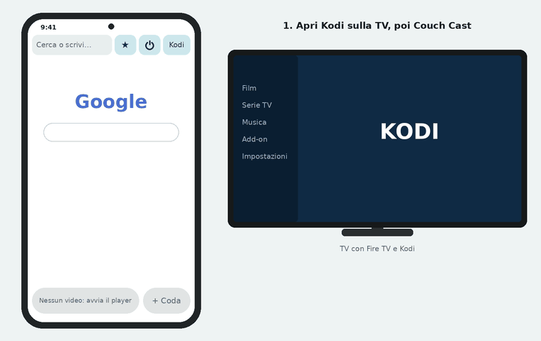

Open the streaming site on your Android phone, start the player, and Couch Cast sends the video to Kodi on your Fire TV. Free, no ads, no account.
Apri il sito di streaming sul telefono Android, avvia il player e Couch Cast manda il video a Kodi sulla Fire TV. Gratis, senza pubblicità, senza account.
Download the APKScarica l'APKAndroid 13+A drawing of the app, not a recording. The app's labels are in Italian.
Un disegno dell'app, non una registrazione.
How it works
Come funziona
Install Kodi on the Fire TV and turn on Allow remote control via HTTP. Done once.
Installa Kodi sulla Fire TV e attiva Consenti il controllo remoto via HTTP. Si fa una volta sola.
Couch Cast is the browser. Go to the episode and start the player: the app finds the video.
Couch Cast fa da browser. Vai all'episodio e avvia il player: l'app trova il video.
(Send to Kodi.) The video starts on the TV in full quality. You can lock the phone.
Il video parte sulla TV a qualità piena. Il telefono si può bloccare.
What it does
Cosa fa

Captions in the animations are in Italian, like the app.
Disegni dell'interfaccia, non registrazioni.
Popups and jumps to other domains are stopped. The shield counts them.
Popup e salti verso altri domini si fermano. Lo scudo li conta.
Each series waits at the right episode and minute, even if the site changes domain.
Ogni serie ti aspetta all'episodio e al minuto giusti, anche se il sito cambia dominio.
Seek, ±10 s, skip intro, subtitles, audio, volume, from the Kodi bar at the bottom.
Vai al minuto, ±10 s, salta sigla, sottotitoli, audio, volume, dalla barra di Kodi in fondo.
Found a link in Chrome? Share it to the app and send it straight to Kodi.
Hai trovato un link in Chrome? Condividilo con l'app e mandalo subito a Kodi.
What you need
Cosa serve
8080).Kodi con il controllo remoto via HTTP attivo (di solito porta 8080).The app finds Kodi by itself. If it doesn't, type IP:port, e.g. 192.168.1.50:8080.
L'app trova Kodi da sola. Se non ci riesce, scrivi IP:porta, es. 192.168.1.50:8080.
| Device | Dispositivo | Works | Funziona |
|---|---|---|---|
| Fire TV withcon Fire OS | Yes, testedSì, provato | ||
| Android TV, Nvidia Shield, Google TV | YesSì | ||
| PC, Raspberry Pi, Xbox with KodiPC, Raspberry Pi, Xbox con Kodi | Yes, no power buttonSì, senza accensione | ||
| Fire TV withcon Vega OS | No KodiNiente Kodi | ||
| Samsung Tizen, Roku | No KodiNiente Kodi |
Full list in the README.
Elenco completo nel README.
Questions
Domande
Android phones cast only with Google Cast, and the Fire TV doesn't support it. Kodi is free, has no ads and can be controlled over the network, so the phone only needs to tell it what to play.
I telefoni Android trasmettono solo con Google Cast e la Fire TV non lo supporta. Kodi è gratis, senza pubblicità e si comanda dalla rete: al telefono basta dirgli cosa riprodurre.
No. Only at the start the phone hands Kodi the playlist and the key, then Kodi downloads the video itself. Full quality, and the phone can be locked.
No. Solo all'avvio il telefono passa a Kodi la playlist e la chiave, poi Kodi scarica il video da solo. Qualità piena e telefono che si può bloccare.
It's a personal project. Every APK is signed with the same key, so it installs over the previous one; the app tells you when there's a new version. With Obtainium updates take one tap.
È un progetto personale. Ogni APK è firmato con la stessa chiave, quindi si installa sopra il precedente; l'app avvisa quando c'è una versione nuova. Con Obtainium si aggiorna con un tocco.
The interface is in Italian for now. The guide explains every button in English.
Sì, l'interfaccia è in italiano. La guida c'è anche in inglese.
Download the APK on your phone, allow the install, and open the guide if it's your first time.
Scarica l'APK dal telefono, consenti l'installazione e apri la guida se è la prima volta.
Download the APKScarica l'APKAndroid 13+